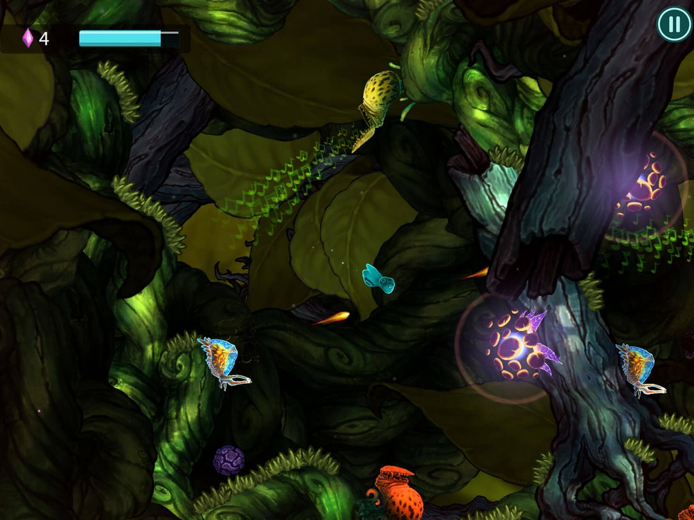

In augustus 2013 kwam het ritme-platform-spel Beatbuddy: Tale of the Guardians uit op pc. De reviews waren positief en ze werden bedolven onder de prijzen. Nu brengt ontwikkelaar Threaks Beatbuddy, na iOS en Android, ook naar Wii U en Xbox One.
In Beatbuddy ben je een blauwe guardian met een grote koptelefoon en moet je jouw onderwaterwereld redden. Je reist door de gevaarlijke oceaan met krabben, agressieve vissen en vijandige soldaten van de slechte Maestro op zoek naar je zussen. Je lost omgevingspuzzels op om je reis te vervolgen, maar doe dat wel op de maat van de muziek. De besturing van Beatbuddy is makkelijk, maar het draait juist om de timing. Voor degenen met een ritmische stoornis: gewoon goed letten op de omgeving geeft je ook aan wanneer je het best actie kunt ondernemen. Gedurende sommige levels heb je een onderzeeër en het wordt pas echt leuk als je onderzeeër ook een mitrailleur krijgt. Je onderzeeër kan alleen snel bewegen op de tweede tel; als je licht headbangt dan is dit trucje makkelijk te doen. Of je kiest ervoor om met een slakkengangetje door het level te gaan natuurlijk.
De omgevingen zijn met de hand geschilderd en de cartoony stijl spreekt mij wel aan. De doelgroep lijkt door deze stijlvorm meer voor kinderen te zijn, maar de puzzels zijn in de latere levels pittig genoeg om volwassen hersenen te laten kraken. Het zijn platformpuzzels met de bekende verborgen bonuspunten. De verschillende levels zijn ook werkelijk anders en de achtergrondmuziek is steeds van een andere band. Zo heb je ook echt een unieke sfeer bij elk gebied.
Het spel zit bomvol muziek die speciaal voor Beatbuddy is geschreven. Om de stemmen weer te geven, wordt er gebruikgemaakt van een gemompel, zoals in Magicka waar deze techniek al eerder met succes is toegepast. Het verhaal is standaard, wat platformers betreft. Jij moet helpen de wereld te redden. Je hebt een oude gast genaamd Clef, die je af en toe ‘helpt’, maar jij doet uiteraard al het werk. De oceaan zit vol met rare kogelvissen, scherpe uitsteeksels en barrières waar je als een kanonskogel doorheen moet breken. Er zijn machines die de hele wereld 90 graden draaien, deuren die alleen openen met een sleutel en altijd bemoedigend advies van Clef.
Helaas kan na een tijdje de verveling toeslaan. De puzzels worden behoorlijk groot en uitgebreid, maar daardoor ook omslachtig om op te lossen. Vaak laat de oplossing zich wel raden, maar is het veel ‘werk’ om alle factoren in een level goed te krijgen. Een spel mag niet aanvoelen als werk, dat is dodelijk voor je motivatie. Sommige acties moet je vaker in een level uitvoeren en die herhaling kan ook storend zijn. De doordringende bas kan ook vervelend worden als je te lang bij een puzzel met bastonen blijft vastzitten. Het irriteert jou, omdat je timing niet goed genoeg is en het werkt je huisgenoten op de zenuwen, want die bas bonst bruut.
Beatbuddy: Tale of the Guardians is zeker de moeite waard als je van platformgames houdt. De wereld is grafisch prachtig, de muziek is afwisselend en het verhaal is boeiend genoeg. Helaas zijn de puzzels soms wel erg groots opgezet. Als je niet zeker weet of het spel iets voor jou is, je kan via Steam een gratis demo downloaden.
Beatbuddy: Tale of the Guardians is verkrijgbaar op iOS, Android, pc, Mac, Linux en nu dus ook op Xbox One en Wii U.
Vorig jaar rond deze tijd verscheen Sword Art Online: Hollow Fragment op de PlayStation Vita, gevolgd door een goeie review van Kensuke. Nu is Sword Art Online Re: Hollow Fragment uitgekomen voor de PlayStation 4, een director’s cut-versie van de Vita-port. Het spel is grotendeels hetzelfde gebleven, maar de multiplayer geeft het een hele nieuwe dimensie.
Luie port Vorig jaar heb ik Sword Art Online op de Vita gespeeld en er zelfs een ‘grip’ voor aangeschaft om langer te kunnen gamen met mijn grote klauwen. Ik vond het een leuk spel, maar spelen op een handheld is niet echt mijn ding. Het is voor mij een oprechte verademing om Kirito (de hoofdpersoon) te zien rondrennen op het grote scherm. De PlayStation 4 geeft het spel iets duidelijker weer dan de Vita. Je kan makkelijker zien welk knopje wat doet en grafisch is het wat gelikter. Dat was het dan. De single player van Sword Art Online Re: Hollow Fragment is een hele luie port die weinig meer toevoegt dan speelgenot op een groter scherm. Als je bedenkt dat de Vita-versie een port is van een PSP-game, dan besef je weer wat een gemiste kans deze uitgave is. Maar ach, het was een geinig en onderhoudend spel en dat is het nog steeds. Nee, hoogstaand is het niet, je moet behoorlijk wat grinden en langs heel veel dialogen, maar je blijft spelen. Er zijn veel quests te halen, materialen te verzamelen, meisjes te versieren, bazen te verslaan en nieuwe gebieden te ontdekken en dat houdt je toch geïnteresseerd. Tenminste, als je een fan bent van de anime, want anders is de lol er snel vanaf.
Verhaal In de nabije toekomst kun je fysiek inloggen in een virtual reality MMORPG. Wat degenen die het spel spelen in eerste instantie niet weten, is dat als ze sterven in het spel ook daadwerkelijk in het echte leven doodgaan. Dus ze moeten proberen alle 100 etages leeg te vechten om het spel uit te spelen. In de animeserie lukt dat al op de 75e etage, maar in het spel loopt die epische scene anders af. Het spel gaat verder vanaf dat moment en je moet dus doorvechten. Aan het begin van het spel ontdekt de hoofdpersoon Kirito per toeval een onbekend stukje van de wereld Aincrad. In deze ‘Hollow Area’ zijn veel sterke monsters, zeldzame materialen en een mooi meisje genaamd Philia. Al snel geeft het spel je de vrije hand en kun je zelf kiezen waar je heengaat en wat je gaat doen.
De verhaalmodus van Sword Art Online Re: Hollow Fragment doet alsof het een MMORPG is, maar is eigenlijk gewoon een single player-game. Het betekent dus dat je alleen met personen speelt uit de serie die volgens het spel medespelers zijn. Zij zien en noemen anderen dan ook NPC (non playable character), terwijl zij dat zelf in feite ook zijn. Je kunt telkens een ‘persoon’ kiezen die met je meegaat op strooptocht. Het spel kun je ook niet pauzeren, want je speelt nu eenmaal ‘online’. Dat was ik even vergeten toen ik bezig was mijn skills te kiezen nadat ik geleveld was. Een slijmbrok was dichtbij geslopen en slurpte me dood voordat ik uit het menu was. Erg wrang.
Enkele tips In Sword Art Online kun je alleen rondlopen en met een partner. Doe je het laatste dan verdient je maatje ook XP. In gevechten heb je dan ook de mogelijkheid om van de gevaarlijke positie in de voorhoede te wisselen, een zogenaamde ‘switch’.
Toen ik de Vitaversie speelde, ging ik door de Hollow Area zwerven. Mijn tip is dan ook, doe dat niet. Volg gewoon het verhaal en word sterker in het standaardgebied. Als je dat doet dan gaat de tutorial door en krijg je meer (achtergrond)informatie en tips over het spel. Het is een onvervalste RPG, dus je hebt een uitgebreide skill-tree en je kunt je wapen en je pantser pimpen. Daarnaast kan je ook een wapen naar keuze laten maken (craften) en met behulp van materialen die je vindt opleuken met verschillende eigenschappen. Nog een tip: doen.
Voordat je iets of iemand aanvalt, kun je even kijken welk level de ander is. Dat kan erg verstandig zijn om te checken, want er kan een level 107-zwijn tussen de level 82-zwijntjes staan. Gelukkig heeft Sword Art Online Re: Hollow Fragment geen permadeath, maar je begint weer aan het begin van het gebied en dat kan erg irritant zijn. In Sword Art Online zwerf je veel rond in labyrinten en het is zuur om weer aan het begin te staan en opnieuw alles leeg te hakken. Jawel, je bent ook je xp kwijt.
Er zijn verschillende soorten quests en de meeste krijg je van een NPC bij de teleport, dus dat schiet op. Ook kunnen je ‘medespelers’ met je communiceren door berichtjes naar je te sturen. Vaak zijn dat verzoeken om hulp, flirterige opmerkingen en bezorgde adviezen. In Sword Art Online zijn er veel meer vrouwen dan mannen. Opmerkelijk is ook dat bijna alle vrouwen jou onweerstaanbaar vinden. Voor de players onder ons: als alle vrouwen je lief vinden, dan krijg je een trophy. Sword Art Online is een Japanse game, dus de seksuele insinuaties zijn niet van de lucht. Net zo min als het grinden. Je moet elk gebied ten minste twee keer leegruimen, dus ren er eerst doorheen, haal dan de quests op die erbij horen en ren er nogmaals doorheen. De tegenstanders die je hebt verslagen komen na bepaalde tijd weer terug en in sommige gebieden vullen de schatkisten zichzelf ook weer. Om de spanning vast te houden komen er ook ‘interrupt missies’ en ‘hollow missies’ lukraak tussendoor. Je krijgt dan een opdracht die je binnen een bepaalde tijd moet doen, zoals het slachten van tien groene slijmballen. De beloning is vaak de moeite waard.
Daarnaast kom je ook puzzels tegen in het spel. Niets hoogdravends, maar je verdient ook hier weer leuke spullen mee. De echt sterke tegenstand vind je in de Hollow Area. Het maximale level dat je kunt halen is opgehoogd naar level 300.
Sword Art Online Re: Hollow Fragment heeft ook een ‘new game plus’-optie. Je moet wel alle quests gedaan hebben in Aincrad en de Hollow Area voordat je de 100e etage betreedt. Na het verslaan van de eindbaas begint het spel opnieuw. Je bent weer level 100, houdt al je spullen en skills en alle monsters zijn veel sterker geworden.
Bugs Zoals gezegd is Sword Art Online Re: Hollow Fragment een luie port. Een aantal bugs zijn dus ook meegekomen naar PlayStation 4. Kirito doet af en toe helemaal niets in een gevecht terwijl hij niet verlamd is. Het vreemdste dat ik meemaakte was toen Kirito wel degelijk werd verlamd door een mega-tarantula. Ik maakte vervolgens een brute combo, opende de schatkist die de spin bewaakte en liep weg. Toen pas kwamen de visuele effecten van de verlamming in beeld en kon ik mij niet meer bewegen. Soms worden objecten op de verkeerde plek weergegeven. Hier een voorbeeld van Kirito met een uitroepteken voor zijn gezicht. Degene die informatie voor hem heeft staat achter hem.
Wat geen bug is, maar wel vervelend is dat je goed recht voor een object moet staan, voordat je deze kunt activeren. Maar je bent onweerstaanbaar voor alles en iedereen en je partner staat vaak in de weg om zo dicht mogelijk bij jou te kunnen zijn. En dat brengt mij bij een ander punt: alle vrouwen willen constant zoveel mogelijk aandacht van je. Dit resulteert in heel veel gepraat met jaloerse meiden die elkaar steeds willen aftroeven en jij moet telkens jezelf verantwoorden. Helaas heb je hier niet de mogelijkheid om een antwoord te kiezen, maar je moet steeds weer door die zure appel heen.
Multiplayer redt het spel
Nu komt het leukste deel van de review. De Vita-versie had reeds een lokale multiplayer, maar de PlayStation 4 heeft een volwaardige versie. Als je echt snel door het spel wilt rennen, dan begin je zo snel mogelijk aan de multiplayer. Ik heb avonden zitten grinden om 9 levels omhoog te gaan, maar een paar uur in de multiplayer leverde meteen twintig levels vooruitgang op. Je kunt alleen multiplayer spelen in de Hollow Area, maar daar is ook het meeste te halen. Daar zitten de zeldzaamste materialen, de vetste wapens en de sterkste tegenstanders. Je hebt veel mogelijkheden om een multiplayergame op te starten.
Als je een party hebt gekozen, dan kom je in een lobby terecht. Hier kun je kiezen of je een partner meeneemt van je eigen entourage of dat je alleen gaat vechten. Er kunnen maximaal vier gamers meedoen. Als iedereen een partner meeneemt, dan ben je dus met acht personen aan het rondrennen. Verder zijn er handelaren in de lobby om je potions aan te vullen en hier kun je ook met de anderen ruilen. Als je een beginner bent, dan krijg je automatisch vette gear aangeboden, want Sword Art Online heeft een glitch waardoor gamers spullen kunnen dupliceren. Het is uiteraard aan jou of je hieraan meedoet. De multiplayer heeft alle voor- en nadelen van iedere multiplayer die je kent. Het is gezellig, je levelt extreem snel, je krijgt veel tips over het spel en anime’s en natuurlijk de welgemeende levensadviezen betreffende het vrouwelijk geslacht.
Conclusie Sword Art Online Re: Hollow Fragment is absoluut een game voor de fans. Ik wil niet zover gaan om te beweren dat iedere fan deze game moet halen, maar je moet een fan zijn om de game te spelen. De PlayStation 4-versie speelt lekkerder omdat het op een groter scherm is, maar als je niets om online multiplayer geeft dan is de Vita-versie een prima alternatief. Het is een prima game die je uren kan bezighouden, maar de multiplayer houdt je makkelijk weken op de bank. Houd je van anime en gamen, scoor dan gewoon Sword Art Online Re: Hollow Fragment.
The Incredible Adventures of Van Helsing - Final Cut
Final Cut op 23 september
De reeks Van Helsing van NeocoreGames heeft in totaal meer dan 1 miljoen exemplaren verkocht. Het eerste deel was een doorslaand succes, maar de twee opvolgers werden geplaagd door bugs en tegenvallende kritieken. Om de fans tegemoet te komen heeft NeocoreGames alle drie de delen in een spel gepropt met verbeteringen, extra content en een hogere level cap. Neocore noemt dit The Incredible Adventures of Van Helsing – Final Cut.
Als gebaar naar de fans toe krijgt iedereen die alle delen van Van Helsing heeft, de Final Cut-versie gratis. Er zijn 20 scenario's die, inclusief terrein en monsters, random worden gegenereerd. Neocore heeft een co-op voor vier spelers, met daarnaast drie multiplayermodi waaronder PvP. Final Cut krijgt ook dagelijkse quests, wekelijkse events en challenges.
Je kunt nu in het begin kiezen uit alle zes klassen monsterjager, te weten bounty hunter, elementalist, phlogistoneer, protector en umbralist. Dat betekent dat je deel I en II opnieuw kan spelen met andere klassen. Alle geliefde – gehate tower defense-spelonderdelen zijn nu optioneel, maar leveren extra veel op. Het maximaal haalbare level is flink omhooggeschroefd naar 80 voor de verhaalmodus. Het feit dat het maximale level in Van Helsing 3 verlaagd was naar 30 viel heel erg verkeerd bij de fans. Nu gebeurt het omgekeerde en kun je ervoor kiezen vanaf het begin van het spel met een level 80 personage rond te lopen. Ik weet oprecht niet wat de uitdaging daarvan is, maar ik hoop dat de monsters meeschalen met je level.
Met de aparte spelmodus 'Endgame' en het Glory-systeem is het mogelijk om zelfs level 100 te halen. Hier zijn ook zeldzame spullen te vinden. Het kost je volgens Neocore ongeveer 50 uur om de verhaalmodus van Final Cut uit te spelen.
Het klinkt allemaal fantastisch, maar ik heb zelf alleen een random gegenereerd scenario kunnen spelen. Ik heb dus niet kunnen testen of de problemen met de multiplayer zijn opgelost. Ik kwam geen enkele bug tegen, maar dat zegt weinig omdat ik niet lang genoeg heb gespeeld. Wat ik wel heb gezien is dat het afschuwelijke gebruikersonvriendelijke menu is vervangen door een veel beter exemplaar. De skills zijn (weer) uitgebreid en duidelijker ingedeeld en het zoeken in je inventaris is stukken overzichtelijker geworden. Dit was een van mijn grootste struikelblokken in het spel, omdat er best veel loot valt maar het was zo lastig om het allemaal bij te houden.
Final Cut speelt soepel met toetsenbord en muis, zelfs voor een controller-junkie als ik. Het is mij niet duidelijk of de moeilijkheidsgraad is aangepakt, maar ik neem aan dat het iets eenvoudiger is geworden. Dit is een goede gelegenheid voor NeocoreGames om hun reputatie te versterken voordat Warhammer 40K: Inquisitor - Martyr volgend jaar uitkomt. Zodra wij de kans krijgen komt er een volledige review met diepgang.
The Incredible Adventures of Van Helsing – Final Cut komt in september uit voor Windows op pc. Later is er ook een versie voor Mac OS.
De Duitse indiestudio uit het Zwarte Woud genaamd Black Forest Games scoorde een onverwachte hit met hun interpretatie van het platformspel Giana Sisters. Nu hebben ze van deze platformer een racegame gemaakt met bommen en andere bonussen. Lekker bankhangen met de local co-op of online je gram halen, het is helemaal aan jou.
Giana Sisters: Dream Runners lijkt op Mario Kart in een Super Mario-wereld. Je rent al platformend door levels heen en je kan bonussen oppakken. Deze bonussen zijn altijd negatief voor je tegenstanders, maar kunnen jou ook in de weg zitten.
De besturing van de game wordt je uitgelegd naarmate je speelt. Dat betekent uiteraard dat je de eerste races niet wint omdat je de knoppen niet kent. Hier even voor geïnteresseerden: Met R2 kun je de verzamelde kristallen gebruiken om te sprinten; bonussen activeer je met O; X is springen; ∆ is draaiend zweven (twirlen) en met □ verander je jezelf in een vuurbal. De knoppenindeling van Giana Sisters: Twisted Dreams is dus grotendeels aangehouden. Ook kan je nog steeds veranderen tussen een ‘wilde Giana’ en de rustige variant, wat weer invloed heeft op je omgeving. Het veranderen gebeurt als iemand door een elektrische poort rent en dat kan vaak voorkomen in een korte tijd.
Je speelt Giana Sisters: Dream Runners met maximaal vier spelers in negen verschillende levels. Als er niet genoeg mensen zijn, dan kun je, als je dat wilt, bots inzetten. Alle vier starten vanaf hetzelfde punt in hetzelfde scherm. Zodra iemand achterop raakt en uit het scherm verdwijnt, dan gaat er een timer van 30 seconden teruglopen. Degene die na de 30 seconden vooraan staat heeft die ronde gewonnen. De volgende race start vanaf het punt waar de winnaar van de ronde staat. Zodra een speler drie rondes heeft gewonnen, dan is de race afgelopen.
De regels zijn simpel, het spel is chaotisch en je hebt tactisch spel en een stevige dosis aan geluk nodig om te winnen. Tijdens Gamescom heb ik Dream Runners een aantal keer gespeeld en alleen af en toe een ronde gewonnen. Gelukkig is het spel zeer vermakelijk ook al win je de race niet. Ook na aanschaf van Dream Runners kon ik maar niet winnen, totdat ik op een LAN-feest achter elkaar schietspellen had gespeeld. Dat gaf mij dus de juiste killer-mentaliteit om iedereen uit te schakelen. Helaas zijn er weinig tegenstanders te vinden op PlayStation Servers, dus ik heb niet de kans gehad om online te spelen.
Giana Sisters: Dream Runners is een klein spel met een klein prijskaartje. Het is een gezelschapsspel dat heel erg leuk is met vrienden. Helaas is er verder weinig te doen. Je kunt racen tegen de computer, vrienden of vreemden en dat is het. Als je vaak vrienden over de vloer hebt, dan is het een toffe aankoop. Ben je juist vaak alleen, dan kun je beter Giana Sisters: Twisted Dreams of Giana Sisters: Rise of the Owlverlord opstarten.
Pluspunten
Makkelijk te leren
Tactisch spel wordt vaak beloond
Je kan ook winnen met geluk
Minpunten
Sommige levels zijn onoverzichtelijk
Weinig mensen online
Je kan ook winnen met geluk
Gespeeld op PlayStation 4. Ook verkrijgbaar op Xbox One, Wii U en pc.
Vorige week heb ik Dragon Age: Inquisition uitgespeeld. Helaas is het daarna niet meer mogelijk om grootse gevechten aan te gaan en daarom kocht ik de DLC Jaws of Hakkon. Het was niet wat ik ervan verwachtte. Hier volgt mijn mening erover, zonder spoilers.
Als je de DLC aanschaft dan is er een extra gebied op de kaart van de War Table verschenen, genaamd Frostback Basin. Je hoeft het spel niet te hebben uitgespeeld om eraan te beginnen. Ik heb speciaal een save gebruikt voor het eindgevecht om dit te testen. Realiseer je wel dat de vijanden in Frostback Basin een stuk stugger zijn dan in de andere gebieden.
Positieve aspecten Frostback Basin ziet er prachtig uit. Bergen, moerassen, grote hoogteverschillen en mooie uitzichten, Frostback Basin heeft het allemaal. Daarbij is het gebied best groot te noemen. Je komt een stel wilden tegen die zich Avvar noemen. Dit is een interessant bergvolk met een fascinerend geloof. De quests van Jaws of Hakkon zijn goed geschreven en stellen je steeds weer voor lastige (morele) beslissingen.
In Jaws of Hakkon krijg je als Inquisitor ook de beschikking over een nieuwe vaardigheid. Erg leuk en handig.
Anders dan de rest Maar veel aspecten van Frostback Basin lijken gewoon niet te kloppen met de rest van Thedas. Elk gebied in Thedas is gemaakt door een team dat heeft uitgezocht hoe dat gebied in realiteit zou bestaan. Een heel bosrijk gebied als de Hinterlands heeft dus meer planten die je kunt plukken dan de woestenij van Hissing Wastes. Een plantje als Spindleweed groeit aan oevers en Elfroot groeit onder andere in weides onder bomen.
Dit systeem lijkt te zijn losgelaten voor Frostback Basin. Ondanks de overdaad aan groen zijn er zeer weinig plantjes die je kunt plukken. Midden in het moeras is er amper Spindleweed te zien en onder bomen groeit er geen Elfroot. Ook lijken de planten lukraak verdeeld te zijn in het gebied. Het heeft weinig tot niets te maken met waar ze van nature groeien.
In Frostback Basin komen geen metalen voor als ijzer (iron), maar alleen zeldzaam spul zoals Silverite. Dat is mooi. Bijna altijd als je metalen mijnt dan krijg je meer dan één exemplaar. Silverite geeft vaak 5 of meer. Gek genoeg geven planten en kruiden steevast slechts één.
In Thedas kun je na het doden van een dier de overblijfselen verzamelen als loot. Dat is niet zo in Frostback Basin. Zelden is er een karkas dat je kunt plunderen. Dit geldt ook voor de mensen die je doodt. Ik vind dat erg vreemd. Waarom gelden er in het ene gebied andere regels voor het verzamelen van loot dan in het andere?
Kleine irritaties Veel objecten die je kunt verzamelen liggen op vreemde plekken die moeilijk te bereiken zijn. In Frostback Basin zijn er steeds kleine onzichtbare muren, zodat je steeds moet omlopen. Dit is ook uniek aan dit gebied. Ik vind het niet erg om te moeten omlopen, maar maak dan die steen waar ik op moet springen 30 centimeter te hoog en niet slechts één millimeter. Dat maakt het erg frustrerend.
Als je in een gebied loopt, dan praten de mensen om je heen. Bij het Avvar-kamp worden steeds dezelfde twee zinnen gezegd. Daar word je wel een beetje moe van. Sommige quests spelen zich daar af en dan loop je constant in dat gebied heen en weer. Om dan elke 20 seconden hetzelfde te horen is niet zo leuk.
Er is een kamp in een boom en dat is erg origineel. Helaas is dit concept vervolgens gekopieerd en in verschillende kampen toegepast. De boom-kampen zijn identiek, wat natuurlijk onmogelijk is omdat bomen nooit op precies dezelfde manier groeien.
Het niveau De wapens die je vindt zijn heftiger in dit gebied, vooral voor de rogue. De rest moet het hebben van de schematics en zelf iets moois maken. Gelukkig is dat geen probleem dankzij al het Everite, Nevarrite en Silverite. Ook lopen er Snoufleurs rond waarmee je de klasse restrictie van schematics af kunt halen. Je kan dan voor een mage of rogue een heavy armor maken die deze kan dragen. (Met dank aan FOK!ker dutchm4n voor de tip.)
De eindbaas in Jaws of Hakkon is level 24. Dat is best wel laag. Monsters die je kunt tegenkomen op een verborgen locatie zijn level 30. Je hoeft niet level 30 te zijn om deze te verslaan. Ik was level 26 en gebruikte slechts één gezondheidspotion. Het pantser dat ik gebruikte was hetzelfde dat ik gebruikte vóór de DLC, terwijl ik met al mijn nieuwe schema’s en materialen makkelijk iets veel sterkers kan maken.
Conclusie Het geheel van Jaws of Hakkon voelt erg afgeraffeld aan, alsof de ontwikkeltijd opeens drastisch is ingekort. Omdat er geen gevechten zijn die je steeds weer aan kunt gaan, zoals draken die steeds terugkeren, heb ik nu na Jaws of Hakkon weer niets te doen. Jaws of Hakkon voegt wel iets toe aan het verhaal, maar het is niet zo dat je dit niet mag missen. Dragon Age: Inquisition is een steengoed spel; de quest en de lore van Jaws of Hakkon kunnen het niveau nog bijbenen maar de rest blijft jammerlijk achter.
Pluspunten
Leuk verhaal
Mooi gebied
Vette wapens en pantser
Minpunten
Afwijkende regels vergeleken met Thedas
Herhaling in kampen
Vijanden zijn net niet sterk genoeg
Gespeeld op pc met Xbox-controller, vanaf 26 mei ook verkrijgbaar voor Xbox 360, PlayStation 3 en PlayStation 4.
 In augustus 2013 kwam het ritme-platform-spel Beatbuddy: Tale of the Guardians uit op pc. De reviews waren positief en ze werden bedolven onder de prijzen. Nu brengt ontwikkelaar Threaks Beatbuddy, na iOS en Android, ook naar Wii U en Xbox One.
In augustus 2013 kwam het ritme-platform-spel Beatbuddy: Tale of the Guardians uit op pc. De reviews waren positief en ze werden bedolven onder de prijzen. Nu brengt ontwikkelaar Threaks Beatbuddy, na iOS en Android, ook naar Wii U en Xbox One.


{kind=link}
{kind=link}